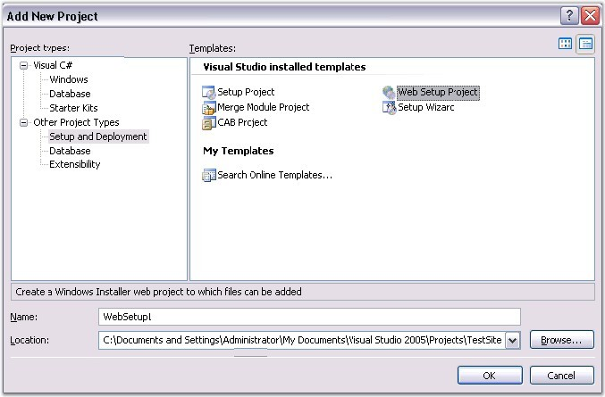
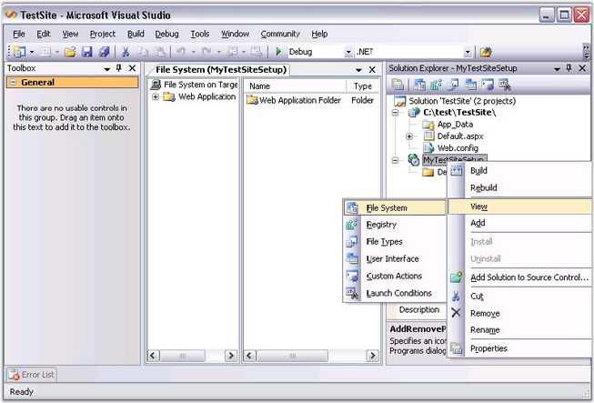
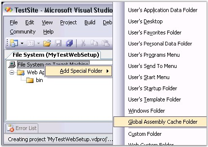
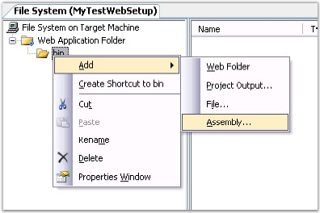
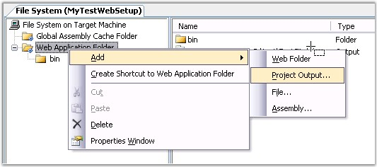

The following are the steps to deploy the Syncfusion Assemblies along with an ASP.NET Website:
1. In the Solution Explorer, right-click the Solution file and then click Add New item -> Add a New Project. The Add New Project dialog box opens.
2. Select Setup and Deployment in the Other Project Types.

Figure 66: Add New Project
3. Specify the name and location in the corresponding field and then click Ok.
4. In that WebSetupProject, right-click the setup project and then click View -> File System.
The FileSystem is the location you have to specify the files to be deployed when using this setup project in the client machine.

Figure 67: File System
5. In the FileSystem, create the GAC folder and project output folder.

Figure 68: Create the GAC Folder and Project Output Folder.
6. Add the assemblies to the bin folder and the GAC folder.

Figure 69: Add Assemblies

Figure 70: Add Project Output
7. Build the project. You will get a .msi file and a .exe file in the output folder of the WebSetupProject.
8. Installing the .msi file in the client system will install all the assemblies you need to install in the user's machine along with the project files to the Target machine.